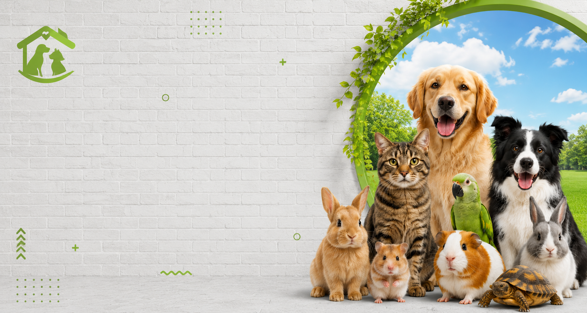

Cuidado que parece carinho, não procedimento.
Medicina veterinária de alto padrão em Curitiba — diagnóstico preciso, tecnologia avançada e uma equipe que trata cada pet como gostaria que o seu fosse tratado.
Cuidado completo, em cada fase da vida do seu pet
Da prevenção à urgência, cada atendimento combina precisão clínica com a gentileza que todo animal merece.
Clínica geral
Consultas completas com avaliação clínica detalhada e acompanhamento contínuo da saúde do seu pet.
Exames e diagnóstico
Equipamentos modernos para diagnósticos rápidos e precisos, com laudos no mesmo dia.
Cirurgias
Procedimentos cirúrgicos com protocolo de segurança rigoroso e recuperação acompanhada de perto.
Banho e estética
Tosa e banho com produtos hipoalergênicos, pensados para o conforto e a pele de cada animal.
Odontologia
Profilaxia e tratamento odontológico para prevenir dores e problemas silenciosos de saúde.
Urgência 24h
Atendimento de emergência a qualquer hora, com equipe preparada para os momentos que não podem esperar.


Tecnologia veterinária com alma de quem ama animais
Unimos equipamentos de diagnóstico avançado a uma equipe que entende que, do outro lado da consulta, existe um tutor preocupado e um pet que confia em nós. Cada decisão clínica é tomada com rigor — e cada atendimento, com presença.
Um ambiente pensado para acolher
Cada espaço da clínica foi desenhado para reduzir o estresse do pet e transmitir confiança ao tutor.
 Recepção
Recepção
 Sala de consulta
Sala de consulta
 Diagnóstico por imagem
Diagnóstico por imagem
 Centro cirúrgico
Centro cirúrgico
 Banho e tosa
Banho e tosa
 Internação
Internação
Histórias de quem confia o seu pet a nós
"Levei minha gata em pânico e saí com ela tranquila. Trataram como se fosse a única paciente do dia."

"Diagnóstico rápido, explicação clara, sem aquela sensação de estar sendo só mais um atendimento."

"A estrutura impressiona, mas o que me fez voltar foi o cuidado humano da equipe com o meu idoso de 14 anos."

"Urgência às 23h e fui recebida na hora. Isso não tem preço quando é o seu animal que está sofrendo."

Tudo o que você precisa saber antes de agendar
Agende uma consulta para o seu pet
Responda ao formulário ou fale diretamente pelo WhatsApp — geralmente respondemos em poucos minutos.